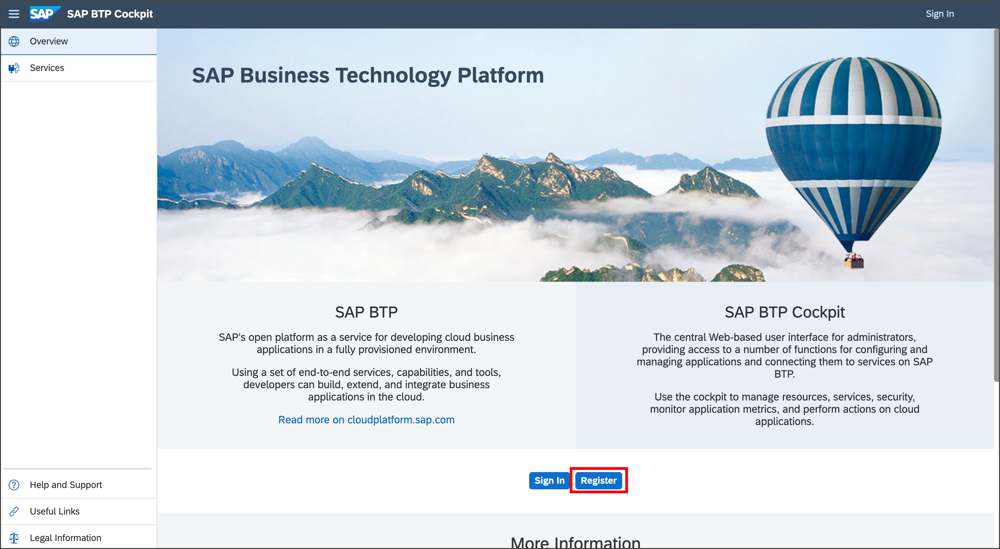
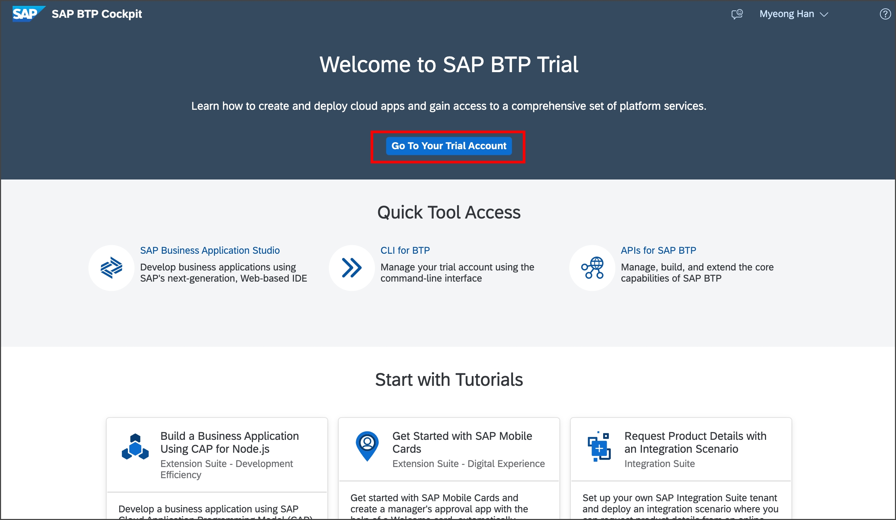
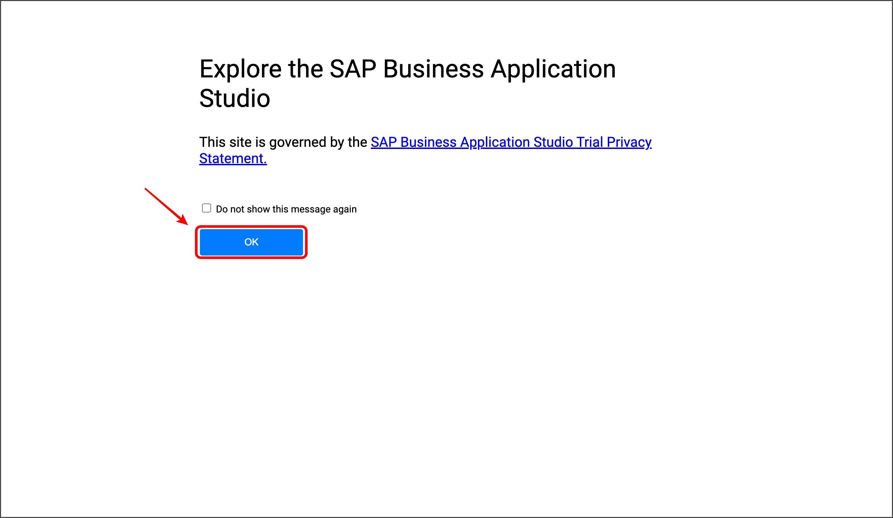
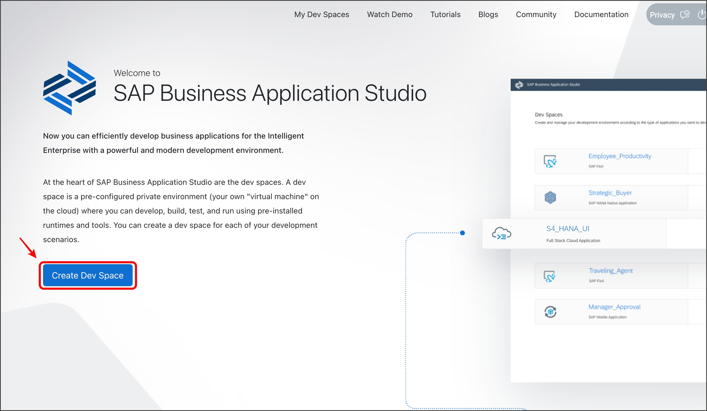
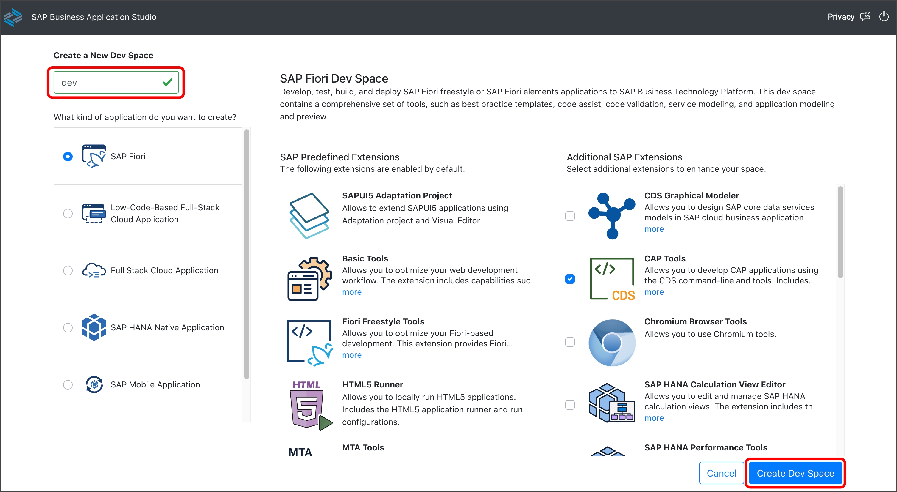
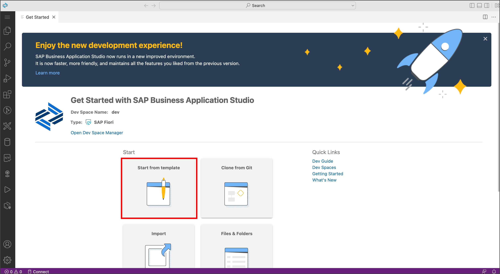
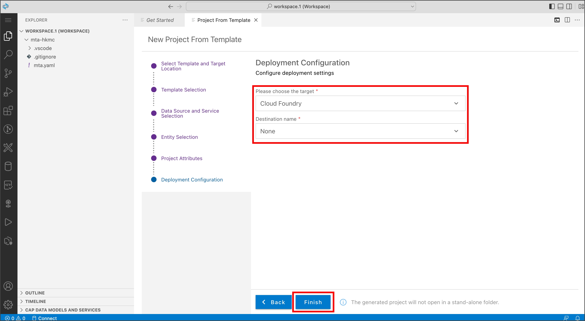
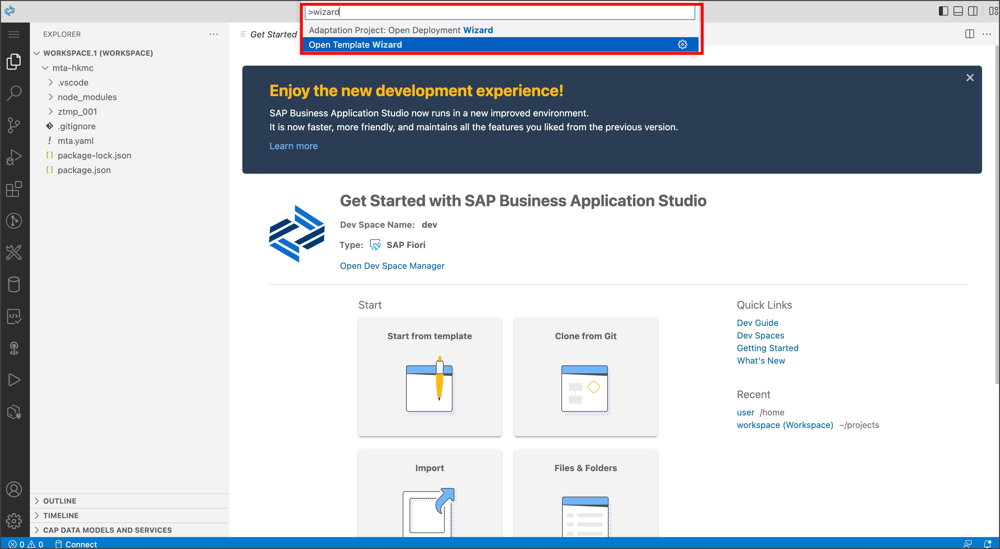
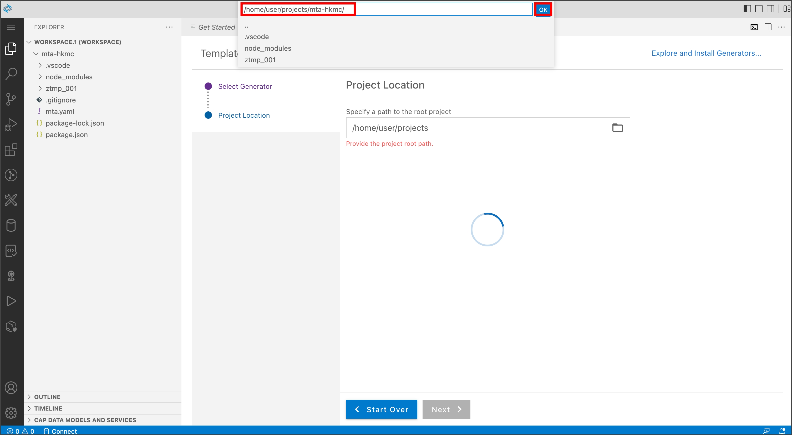

SAP BTP Trial Tutoiral_221119
이 튜토리얼은 SAP BTP에서 개발을 시작하는 개발자를 위한 가이드입니다. 플랫폼 기본 사항에 대해 알아보고, Trial 계정에 등록하고, App을 배포합니다.
1. Login SAP BTP
- https://account.hana.ondemand.com 로 이동하여 SAP BTP cockpit에 로그인(Sign In)합니다.
- SAP BTP Trial 계정이 없다면
Register를 통해 회원가입을 진행합니다.

2. Create Global Account
- 로그인 후 Region을 선택하는 화면이 나타나면 US East(VA)- AWS > Create Account 를 선택

- Account 생성이 완료되면, 아래와 같이 Global Account, Subaccount, Org, Space가 자동으로 생성됩니다.
- Continue를 선택합니다.


- Go To Your Trial Account를 선택합니다.

- Global Account는Subaccount, 구성원(members), 권한(entitlements) 및 할당량(quotas)을 관리하는 데 사용됩니다. Global Account 별로 플랫폼 리소스를 사용할 수 있는 권한(entitlements) 및 할당량(quotas) 을 받은 다음 실제 사용을 위해 권한(entitlements) 및 할당량(quotas) 을 Subccount에 배포합니다.


- SAP BTP Trial Global Account 화면입니다. 이 화면에서 Global Account의 설정이 가능합니다.
- Subaccount 목록에서 방금 전 생성된 trial을 선택합니다.

- SAP BTP Trial Subaccount 화면입니다. 이 화면에서 Subaccount의 설정이 가능합니다.
- Overview 페이지에서 Subaccount의 기본 정보들을 확인할 수 있습니다.
3. Subaccount

- Tiral Global Account가 자동 생성될 경우, Booster를 통해 자동으로 Business Application Studio가 Subscription 됩니다.
- Services > Instance and Subscription > SAP Business Application Studio 선택
4. SAP Business Application Studio


- Create Dev Space 선택

Additional SAP Extensions 에서 아래의 목록을 선택합니다.
- CAP Tools
- HTML5 Application Template
- Launchpad Module
- Basic UI5 Template
- SAP Business Application Studio Extension Development
Space의 이름을 입력하고 Create Dev Space 선택

- 이제 BAS의 Space가 생성되기 시작하고, RUNNING 상태가 되면 Space Name을 선택

5. Create Application
SAPUI5 Application을 생성하고 배포합니다.
MTA(Multitarget Applications)
논리적으로 동일한 Life-Cycle을 공유하는 서로 다른 기술로 생성된 여러 모듈/리소스로 구성된 단일 응용 프로그램입니다.
개발자는 MTA 모듈, MTA 리소스 및 이들 간의 상호 종속성을 포함하는 MTA 모델을 사용하여 Cloud Foundry 환경으로 배포를 검증, 자동화합니다.

1) Create MTA Application
가장 최상단인 MTA Application을 먼저 생성합니다.
- Start from template 선택

- Basic Multitenant Application 선택 > Start 선택

MTA Project명 입력 > Finish 선택
Property Value project name mta-hkmc

2) Create SAPUI5 Application
MTA Application에 SAPUI5 Application을 생성합니다.
- Start from template 선택

- SAP Fiori Application 선택 > Start 선택

- Application Type: SAPUI5 freestyle 선택 > SAPUI5 Application > Next 선택

- Data Source: None 선택 > SAPUI5 Application > Next 선택

View Name: App 입력 > Next 선택
Property Value View name App

아래와 같이 프로젝트 정보를 입력 > Next 선택
Property Value Module name ztmp_001 Application namespace com.hkmc.trial

아래와 같이 프로젝트 정보를 입력 > Next 선택
Property Value target Cloud Foundry Destination name None

3) Create Approuter
MTA Application에 SAP Approuter를 생성합니다.
SAP Approuter
Application이 여러 개의 서로 다른 앱(마이크로서비스)으로 구성된 경우 Application Router는 해당 Application에 대한 단일 진입점(Single entry point)을 제공하는 데 Nodejs 기반의 라이브러리입니다.
SAP Approuter를 사용할 수 있는 환경
- SAP CF – Cloud Foundry
- SAP XSA – XS Advanced (On Premise)
- Local environment
주요기능
- Dispatching of requests to other microservices
- Authentication
- Authorization check
- Complete integration with Destination service
- Complete integration with HTML5 Application repository
- Complete integration with Business Services
- Show all commands(Ctrl + Shift + P) > Open Template Wizard 선택

- Approuter Configuration 선택 > Next 선택

- Prejoect Location을 mta-hkmc 프로젝트 경로로 선택 > Next 선택

아래와 같이 프로젝트 정보를 설정 > Next 선택
Property Value Application Runtime Standalone Approuter authentication No add UI Yes

- 최종적인 프로젝트 구조는 아래와 같습니다.

6. Application Configuration
앱을 실행하기 전에 우선적으로 설정해줘야하는 내역을 설명합니다.
1) SAPUI5 Configuration
xs-app.json
어떤 요청을 어떤 목적지로 전달해야 하는지 결정하는 규칙을
routes라고 합니다. routing을 정의하려면 xs-app.json 파일을 구성해야 합니다.SAPUI5 Application의 xs-app.json 파일을 열고 아래와 같이 수정합니다.
경로: /mta-hkmc/ztmp_001/xs-app.json
xxxxxxxxxx"welcomeFile""/index.html""authenticationMethod""none""routes""source""^(.*)$""target""$1""service""html5-apps-repo-rt""authenticationType""xsuaa"index.html
SAPUI5 Application을 실행하는 파일입니다.
SAPUI5 Application의 index.html 파일을 열고 아래와 같이 수정합니다.
경로: /mta-hkmc/ztmp_001/webapp/index.html
Property Value src https://sapui5.hana.ondemand.com/resources/sap-ui-core.js data-sap-ui-frameOptions allow xxxxxxxxxx<html lang="en"><head><meta charset="UTF-8"><meta name="viewport" content="width=device-width, initial-scale=1.0"><meta http-equiv="X-UA-Compatible" content="IE=edge"><title>temp application</title><style>html, body, body > div, #container, #container-uiarea {height: 100%;}</style><scriptid="sap-ui-bootstrap"src="https://sapui5.hana.ondemand.com/resources/sap-ui-core.js"data-sap-ui-theme="sap_horizon"data-sap-ui-resourceroots='{"com.hkmc.trial.ztmp001": "./"}'data-sap-ui-compatVersion="edge"data-sap-ui-async="true"data-sap-ui-frameOptions="allow"></script><script id="locate-reuse-libs" src="./utils/locate-reuse-libs.js"data-sap-ui-manifest-uri="./manifest.json"data-sap-ui-componentName="com.hkmc.trial.ztmp001"></script></head><body class="sapUiBody sapUiSizeCompact" id="content"><divdata-sap-ui-componentdata-name="com.hkmc.trial.ztmp001"data-id="container"data-settings='{"id" : "com.hkmc.trial.ztmp001"}'data-handle-validation="true"></div></body></html>
2) SAP Approuter
기본적으로 제공해주는 Default Approuter 구성이 있습니다.
하지만 Default Approuter 구성을 이용하기에는 기능적으로 한계가 있으므로, Customizing된 Approuter를 구성합니다.
mta-hkmc/mta-hkmc-approuter/
먼저 위의 경로에서 터미널(Ctrl + Shift + `) 을 열고 아래의 명령어를 입력 cfenv 모듈을 설치합니다.
xxxxxxxxxxnpm i cfenv위의 경로에서 index.js 파일을 생성합니다.
index.js
xxxxxxxxxxconst approuter = require('@sap/approuter');const cfenv = require('cfenv');const getConfigPath = () => {try {const { isLocal } = cfenv.getAppEnv();const options = { xsappConfig: null, destinations: null };if (isLocal) {console.log(`실행환경: localhost`);options.xsappConfig = require("./xs-app-local.json");} else {console.log(`실행환경: cloud foundry`);options.xsappConfig = require("./xs-app.json");}return options;} catch (error) {return error;}};try {const { xsappConfig, destinations } = getConfigPath();const { isLocal, ['app']: appEnv } = cfenv.getAppEnv();const env = isLocal ? 'localhost' : appEnv.space_name === 'prd' ? appEnv.space_name :appEnv.application_name.split('-').reverse()[0];const port = process.env.PORT || 5000;const ar = approuter();ar.start({ port: port, xsappConfig }, () => {console.log('start approuter');});} catch (error) {console.log(error);}다음으로 package.json을 수정합니다.
package.json
xxxxxxxxxx{"name": "approuter","description": "Node.js based application router service for html5-apps","dependencies": {"@sap/approuter": "10.5.1","cfenv": "^1.2.4"},"devDependencies": {"@sap/html5-repo-mock": "2.1.0"},"scripts": {"start": "node .","start-local": "node node_modules/@sap/html5-repo-mock/index.js"}}
다음으로approuter 경로에서 두개의 파일을 생성합니다.
xs-app.json
이 파일은 배포된 후 Cloud Foundry에서 사용되는 routes 설정 파일입니다.
xxxxxxxxxx"welcomeFile""comhkmctrialztmp001/index.html""authenticationMethod""none""routes""source""^/comhkmctrialztmp001/(.*)$""target""$1""localDir""../ztmp_001/webapp"
xs-app-local.json
이 파일은 로컬 환경에서에서 사용되는 routes 설정 파일입니다.
xxxxxxxxxx"welcomeFile""comhkmctrialztmp001/index.html""authenticationMethod""none""routes"참고
welcomeFile은 Application이 최초 실행시 route 경로입니다. local환경에서는 localDir에서 직접 접근을 하며, 배포 환경인 Cloud foundry에서는 html5 repository runtime 서비스를 사용하게 됩니다. welcomeFile namespace는 SAPUI5의 Application의
app id를 사용합니다. 해당 내용은 SAPUI5 Application의manifest.json에서 확인할 수 있습니다.xxxxxxxxxx{"sap.app": {"id": "com.hkmc.trial.ztmp001",}}

3) MTA Application
mta.yaml은 배포 자동화와 관련된 내용을 정의합니다.
mta.yaml > Open With... > Text Editor
아래와 같이 mta.yaml을 작성합니다.
mta.yaml
xxxxxxxxxx_schema-version"3.2"IDmta-hkmcversion0.0.1modulesnamemta-hkmc-app-contenttypecom.sap.application.contentpath.requiresnamemta-hkmc-repo-hostparameterscontent-targettruebuild-parametersbuild-resultresourcesrequiresartifactscomhkmctrialztmp001.zipnamecomhkmctrialztmp001target-pathresources/namecomhkmctrialztmp001typehtml5pathztmp_001build-parametersbuild-resultdistbuildercustomcommandsnpm installnpm run build:cfsupported-platformsnamemta-hkmc-approutertypeapprouter.nodejspathmta-hkmc-approuterrequiresnamemta-hkmc_html_repo_runtimeparametersdisk-quota256Mmemory256Mresourcesnamemta-hkmc-repo-hosttypeorg.cloudfoundry.managed-serviceparametersservicehtml5-apps-reposervice-planapp-hostnamemta-hkmc_html_repo_runtimetypeorg.cloudfoundry.managed-serviceparametersservicehtml5-apps-reposervice-planapp-runtimeparametersdeploy_modehtml5-repo

7. Run Application
SAP Approuter 경로
/mta-hkmc/mta-hkmc-approuter/
해당 경로에서 터미널(Ctrl + Shit + `)을 열고 아래의 명령어를 통해 Application을 실행합니다.
xxxxxxxxxxnpm start
오른쪽 아래의 Open in a New Tab을 통해 실행된 Application 미리보기가 가능합니다.
만약 위와 같이 오른쪽 아래에 탭이 나타나지 않을 경우, Show all commands(Ctrl + Shift + P) > Ports: Preview 를 통해 실행된 Application을 미리보기 할 수 있습니다.
8. Deploy Cloud Foundry
mta.yaml에 설정된 배포 정의를 통해 Cloud Foundry에 배포를 자동으로 수행합니다.
1) Login Cloud Foundry
배포(deploy)를 하기 위해 배포 Target 으로 로그인합니다.
/mta-hkmc
해당 경로에서 터미널(Ctrl + Shit + `)을 열고 아래의 cf cli 명령어를 통해 로그인을 진행합니다.
xxxxxxxxxxcf l -a https://api.cf.us10-001.hana.ondemand.com

2) Build MTA
MTA를 배포하기 위해서는 빌드를 우선적으로 수행해야 합니다. Build를 진행합니다.
/mta-hkmc
해당 경로에서 터미널(Ctrl + Shit + `)을 열고 아래의 명령어를 통해 빌드를 진행합니다. 빌드가 완료되면 archive 폴더에 필드된 mtar 파일이 생성되고, 터미널에 해당 파일의 경로가 출력됩니다. 해당 경로를 더블클릭해 복사(Ctrl+C)합니다.
xxxxxxxxxxmbt build
3) Deploy MTA
위에서 복사한 mtar 파일의 경로를 이용해 터미널(Ctrl + Shit + `)을 열고 아래의 명령어를 통해 빌드를 진행합니다.
xxxxxxxxxx#cf deploy <file path>cf deploy /home/user/projects/mta-hkmc/mta_archives/mta-hkmc_0.0.1.mtar
배포가 완료된 URL을 통해 배포된 Application에 접속하면 아래와 같이 SAPUI5 Application이 나타나는것을 확인할 수 있습니다.

여기까지 SAP BTP Trial에 대한 기본적인 개발 방법 및 배포 방법에 대해 알아보았습니다.
해당 상세 소스는 아래의 git를 통해 확인하실 수 있습니다.